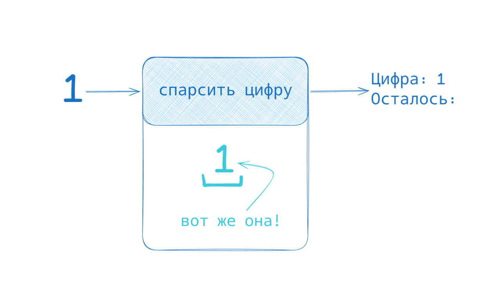
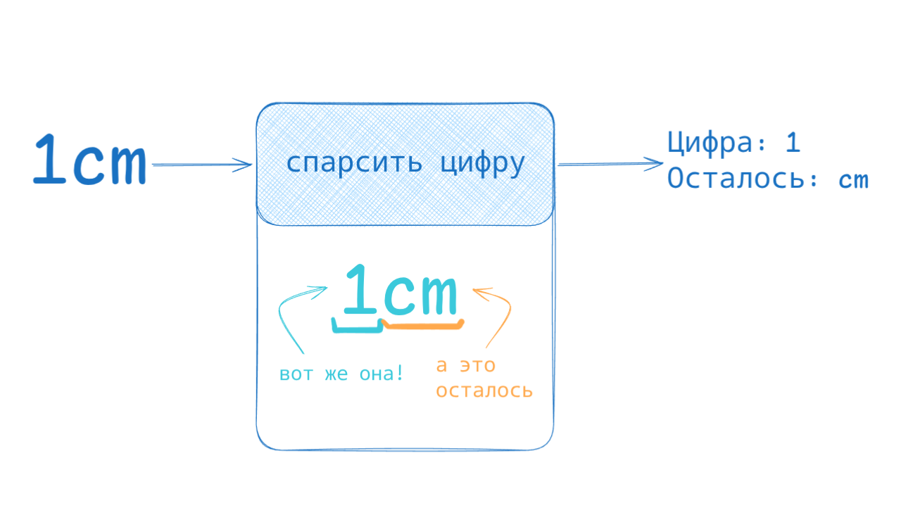
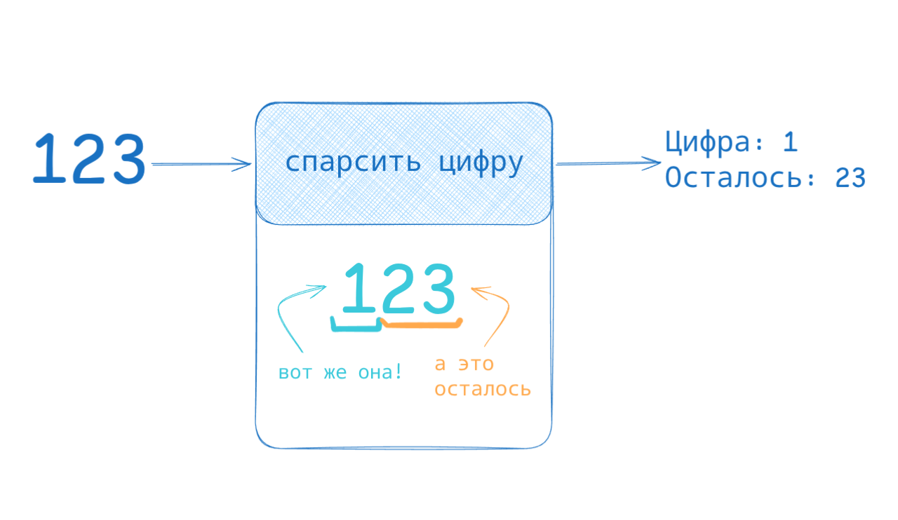
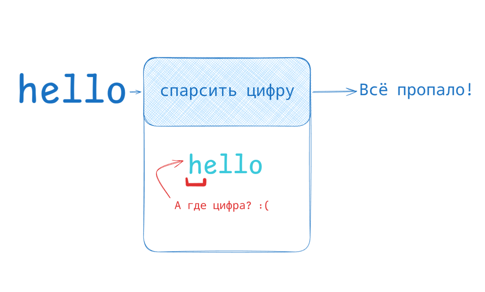
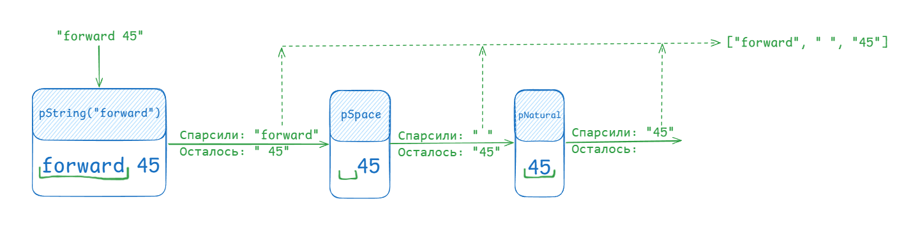
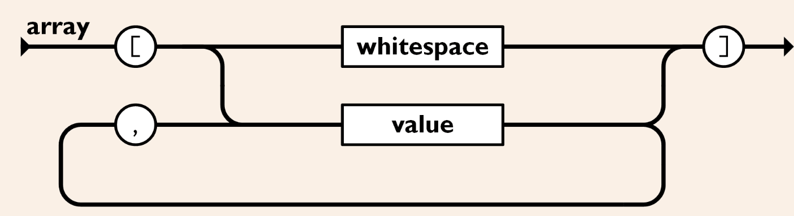

May 02, 2026
Привет, Хабр!
Парсер-комбинаторы и синтаксический анализ в целом — очень интересные темы. Однако материалов со сравнительно низким порогом входа маловато, а в существующих статьях на читателя сразу обрушивается поток терминов и формальностей.
Эту статью я позиционирую как введение в парсер-комбинаторы "для чайников" (или "для самых маленьких" — как вам больше нравится). Цель: попытаться рассказать простым языком и с примерами так, чтобы Вы могли после прочтения написать свой парсер без какого-либо предварительного опыта и знаний в области синтаксического анализа.
Приятного чтения!
Когда-то перед программистом встаёт задача сделать разбор (парсинг) текста. Это может быть собственный DSL на проекте, невозможность существующих библиотек для парсинга удовлетворить потребности проекта или обычный just for fun (tm). Вне зависимости от этого, парсинг — довольно сложное мероприятие. Кто-то может попытаться использовать RegEx, но скоро поймёт, что парсить что-то сложнее телефонных номеров уже очень больно или даже невозможно. Как говорил Джейми Завински: "Некоторые люди, столкнувшись с проблемой, думают: "Я знаю, я использую регулярные выражения". Теперь у них две проблемы".
Что может требовать парсинга? Например:
Парсер — обычная функция, которая пытается "откусить" кусочек от начала текста. В зависимости от того, что у нас за парсер и что за входной текст, мы можем либо получить откушенный кусочек + остаток текста, либо ошибку, если парсер посчитал, что такая строка ему не подходит. Представим, что у нас есть уже готовый парсер цифр. Вот как он себя будет вести.

На вход парсеру подали одну цифру, он посмотрел на начало строки, нашёл там эту цифру, "забрал" её и отдал ответ: "Я нашёл такую подстроку (1), после меня никаких символов не осталось". Посмотрим на другой пример:
На этот раз мы скормили нашему парсеру строку "1cm" (следует читать как "1 сантиметр"). Парсер опять посмотрел на начало строки, увидел там цифру, "откусил" её и ответил: "Я нашёл подстроку 1, после меня осталась ещё строка cm". Обратите внимание на то, что присутствие каких-то символов после не заставляет парсер "упасть". Посмотрим ещё на один пример:
Несмотря на то, что после 1 есть ещё цифры, парсер они не волнуют, потому что его задача — спарсить только одну цифру. Что идёт дальше — неважно. Можно ли применить его ещё раз, нельзя — без разницы. Парсер отрабатывает один раз и возвращает то, что ему удалось спарсить + остаток. Последний пример:
Парсер посмотрел на начало строки и не нашёл там никакой цифры! В таком случае, ему нечего нам сказать, кроме "я не смог".Давайте посмотрим, как это будет выглядеть в коде:
>>> parseDigit("1")
["1", ""]
>>> parseDigit("1cm")
["1", "cm"]
>>> parseDigit("123")
["1", "23"]
>>> parseDigit("hello")
null
В первом случае у парсера получилось "откусить" подходящую ему подстроку с начала текста (1). Он нам вернул то, что ему удалось спарсить, и то, что осталось. Так как 1 и было всем текстом, то осталась пустая строка.
Во втором случае ему так же получилось спарсить 1. Единственное различие — остаток. Парсер на него не обращает никакого внимания. Это видно из третьего случая: несмотря на то, что за 1 сразу стоит 23, парсер отбрасывает их в остаток — он отработал ровно один раз и ровно один раз нашёл цифру, остальное его не волнует. Если хотим ещё, надо применять этот парсер ещё раз, но уже к остатку.
В четвёртом случае парсеру не удалось найти цифру в начале текста, поэтому мы получили null.
Примеры в этой статье будут преимущественно на TypeScript, так как он сравнительно легко читается даже без особых знаний самого языка.
Давайте напишем парочку парсеров, которые пригодятся нам в дальнейшем. Сначала определение типов (куда ж без них!)
type ParseResult<T> = [T, string] | null;
Определим, что такое результат парсинга: это либо удача (что-то спарсили и какая-то строка осталась), либо неудача, которую обозначим null. Не пугайтесь <T>! Мы бы могли использовать [string, string], но, как мы увидим далее, парсер может вернуть не только строку в качестве результата. Если вы ещё не знакомы с дженериками, то это описание следует читать как
тип РезультатПарсинга Чего-то (неизвестного пока нам типа Т) — это
[Что-то, строка] или ничего
Тип парсера:
type Parser<T> = (input: string) => ParseResult<T>;
// Парсер Чего-то (неизвестного пока нам типа Т) — это функция, принимающая строку и возвращающая РезультатПарсинга Чего-то типа Т
Итак, напишем сначала парсер строки. Он будет пытаться найти в начале текста заданную строку. Так можно искать, например, ключевые слова:
function pString(str: string): Parser<string> {
return (input: string) => {
if (input.startsWith(str))
return [str, input.substring(str.length)]
else
return null
}
}
Функция pString создает парсер (функцию string → ParseResult<T>), который пытается найти заданную строку str в начале текста. Если удалось, то возвращает то, что нашёл и что осталось, иначе — null — ошибку. Посмотрим, как он работает:
>>> const parser = pString("hello")
>>> parser("hello")
["hello", ""]
>>> parser("hello, world!")
["hello", ", world!"]
>>> parser("hi!")
null
Теперь напишем ещё пару парсеров. Первый будет "съедать" символы, пока они соответствуют какому-то условию. Так можно будет гибко задавать некоторые последовательности символов:
function pSpanOf(predicate: (char: string) => boolean): Parser<string> {
return (input: string) => {
let i = 0;
while (i < input.length) {
if (!predicate(input[i]))
break
i++
}
return [input.substring(0, i), input.substring(i)]
}
}
Здесь функция pSpanOf создаёт парсер, который парсит все символы, пока выполняется переданный предикат, то есть функция predicate от очередного символа возвращает true.
Сделаем ещё модификацию — pNonEmptySpanOf. Всё то же самое, но если ни один символ не попал под условие, то такой парсер упадёт с ошибкой:
function pNonEmptySpanOf(predicate: (char: string) => boolean): Parser<string> {
return (input: string) => {
const result = pSpanOf(predicate)(input)
if (result == null) return null;
if (result[0].length == 0)
return null
else
return result
}
}
Здесь мы воспользуемся уже готовым pSpanOf и просто проверим, есть ли хоть что-то в первом элементе результата (в котором, как известно, лежит то, что удалось спарсить).
Проверим наши парсеры:
>>> const pNatural = pNonEmptySpanOf(char => char in ["0", "1", "2", "3", "4", "5", "6", "7", "8", "9"])
>>> const pSpace = pSpanOf(char => char == " ")
>>> pNatural("123")
["123", ""]
>>> pNatural("123cm")
["123", "cm"]
>>> pNatural("hello")
null
>>> pNatural("")
null
>>> pSpace(" 123")
[" ", "123"]
>>> pSpace("123")
["", "123"]
>>> pSpace("")
["", ""]
Всё работает!
"Зачем нам pSpace, который просто парсит пробелы? Это же бессмысленно!" — может задаться справедливым вопросом читатель. Ответ прост: обычно в языках у нас слова (токены) разделены пробелами. Если мы захотим спарсить два числа, например, 123 456, то у нас не получится просто последовательно два раза применить pNatural, так как после первого применения останется не "456", а " 456". Нам придётся применить pSpace, чтобы он "съел" все пробелы.
Вообще, конечно, пробелами стоит считать не только сами пробелы, но и символы вроде табуляции и переноса строки.
Теперь представим, что мы пишем язык для управления роботом. Пускай у нас будет команда forward <число>, которая заставит робота проехать вперёд сколько-то метров. Как спарсить такую строку? Давайте разберём её по частям.
Парсинг forward довольно очевиден: pString("forward"). Парсинг числа, в целом, тоже: pNatural. С пробелами разберётся pSpace. Но нужно каким-то образом "склеить" эти три парсера, чтобы получился большой парсер, который либо спарсит forward <число>, либо не спарсит вообще ничего. И именно тут мы встречаемся с комбинаторами.
Комбинатор парсеров — функция, которая позволяет создать из одних парсеров другой. И первый комбинатор, с которым мы познакомимся — sequence. Этот комбинатор будет парсить последовательность.
function pSequence<T>(...parsers: Parser<T>[]): Parser<T[]> {
return (input: string) => {
const results: T[] = []
for (const parser of parsers) {
// Применяем последовательно каждый парсер
const result = parser(input)
// Если последовательность не удалась
if (result == null) return null
// Иначе добавляем результат и уменьшаем input
const [parsed, rest] = result
results.push(parsed);
input = rest;
}
return [results, input]
}
}
Комбинатор последовательности создаётся с некоторой последовательностью парсеров (в TypeScript происходит распаковка массива. Читай как просто все аргументы pSequence складываются в массив parsers). Полученный парсер пытается по очереди применить все переданные парсеры. Если на каком-то из этапов произошла ошибка, то вся последовательность не удалась, и возвращается null. Иначе вернём всю последовательность и то, что осталось спарсить.
Примерно так мы сможем его использовать:
const p = pSequence(
pString("forward"),
pSpace,
pNatural
)
console.log(p("forward 45"))
console.log(p("forward"))
console.log(p("forward45"))
// Вывод:
// [["forward", " ", "45"], ""]
// null
// [["forward", "", "45"], ""]

Поздравляю, мы написали первый комбинатор!У робота может быть команда не только "вперёд", но и "назад", а ещё "повернуть на". Нам нужно создать такой парсер, который будет пытаться спарсить один из возможных вариантов. Напишем его:
function pOneOf<T>(...parsers: Parser<T>[]): Parser<T> {
return (input: string) => {
for (const parser of parsers) {
const result = parser(input)
if (result != null)
return result;
}
return null;
}
}
Этот парсер чуть-чуть похож на pSequence, только он возвращает первый удачный результат, а если ничего не подошло, то ошибку (null). Вот так мы можем расширить наш язык:
const p = pOneOf(
pSequence(
pString("forward"),
pSpace,
pNatural
),
pSequence(
pString("backward"),
pSpace,
pNatural
),
pSequence(
pString("rotate"),
pSpace,
pNatural,
pSpace,
pOneOf(
pString("left"),
pString("right")
)
)
)
console.log(p("forward 45"))
console.log(p("backward 45"))
console.log(p("rotate 45 left"))
console.log(p("rotate 30 right"))
// Вывод:
// [["forward", " ", "45"], ""]
// [["backward", " ", "45"], ""]
// [["rotate", " ", "45", " ", "left"], ""]
// [["rotate", " ", "30", " ", "right"], ""]
Так как все парсеры у нас — функции, то есть, обычные значения, то для удобочитаемости, можем разложить их по переменным:
const pForward = pSequence(
pString("forward"),
pSpace,
pNatural
)
const pBackward = pSequence(
pString("backward"),
pSpace,
pNatural
)
const pRotate = pSequence(
pString("rotate"),
pSpace,
pNatural,
pSpace,
pOneOf(pString("left"), pString("right"))
)
const p = pOneOf(pForward, pBackward, pRotate)
Напишем ещё комбинатор pOptional. По сути, он будет подавлять любую ошибку, то есть, будет говорить: "не получилось — ну и не надо, возьмём значение по умолчанию".
function pOptional<T>(parser: Parser<T>, defaultValue: T): Parser<T> {
return (input: string) => {
const result = parser(input)
if (result != null)
return result
else
return [defaultValue, input]
}
}
Как мы можем его использовать? Ну, например, сделать повороты по умолчанию направо, если не указано обратное:
const pRotate = pSequence(
pString("rotate"),
pSpace,
pNatural,
pSpace,
pOptional(pOneOf(pString("left"), pString("right")), "left")
)
console.log(p("rotate 45"))
console.log(p("rotate 45 left"))
console.log(p("rotate 45 right"))
// Вывод:
// [["rotate", " ", "45", "", "left"], ""]
// [["rotate", " ", "45", " ", "left"], ""]
// [["rotate", " ", "45", " ", "right"], ""]
Пока что мы умеем парсить лишь одну команду. Ясное дело, команд в программе должно быть много. Напишем комбинатор, который позволит применять один и тот же парсер, пока это возможно:
function pZeroOrMany<T>(parser: Parser<T>): Parser<T[]> {
return (input: string) => {
const results: T[] = []
let result = null
while (true) {
result = parser(input)
if (result == null)
break
if (input == result[1])
break // ничего не произошло, парсить дальше нет смысла
results.push(result[0])
input = result[1]
}
return [results, input]
}
}
Здесь мы снова и снова пытаемся применить parser к входной строке. Если не удалось — выходим из цикла и возвращаем что есть. Если удалось — обновляем входную строку и сохраняем результат. Вот как мы можем его использовать:
const pForward = pSequence(
pString("forward"),
pSpace,
pNatural,
pSpace
)
const pBackward = pSequence(
pString("backward"),
pSpace,
pNatural,
pSpace
)
const pRotate = pSequence(
pString("rotate"),
pSpace,
pNatural,
pSpace,
pOptional(pOneOf(pString("left"), pString("right")), "left"),
pSpace
)
const pCommand = pOneOf(pForward, pBackward, pRotate)
const pProgram = pZeroOrMany(pCommand)
console.log(pProgram("forward 10 rotate 45 left backward 5"))
// Вывод:
// [
// [
// ["forward", " ", "10", " "],
// ["rotate", " ", "45", " ", "left", " "],
// ["backward", " ", "5", ""]
// ],
// ""
// ]
Заметьте, что теперь у нас каждая команда "подчищает" пробелы после себя — каждая pSequence команды кончается pSpace. Без этого нам бы пришлось писать что-то вроде forward 10rotate 45 leftbackward 5, иначе уже со второй команды ничего бы не работало, так как пробел перед ней забрать просто некому.
Вряд ли мы хотим позволять пустые программы, поэтому давайте потребуем, чтобы в программе была хотя бы одна команда. Сделать это теперь проще простого:
function pOneOrMany<T>(parser: Parser<T>): Parser<T[]> {
return (input: string) => {
const result = pZeroOrMany(parser)(input)
if (result == null) return null
if (result[0].length == 0) return null
return result
}
}
И теперь пустая программа является ошибкой:
const pProgram = pOneOrMany(pCommand)
console.log(pProgram(""))
// Вывод:
// null
Сейчас мы получаем не шибко полезные списки из строк. Хотелось бы вместо них получать объекты классов команд, например, или какие другие полезные объекты. Для этого нам потребуется необычный комбинатор pMap. Он будет применять некоторую функцию преобразования результата. Взгляните на его реализацию:
function pMap<A, B>(transform: (a: A) => B, parser: Parser<A>): Parser<B> {
return (input: string) => {
const result = parser(input)
if (result == null) return null
return [transform(result[0]), result[1]]
}
}
Он принимает функцию преобразования и исходный парсер и возвращает парсер, который прогоняет сначала исходный парсер, а потом, если парсинг удался, прогоняет полученное значение через преобразование и возвращает новое значение.
Теперь мы можем написать свои типы команд:
type Rotate = {cmd: "rotate", angle: number, direction: string}
type Forward = {cmd: "forward", distance: number}
type Backward = {cmd: "backward", distance: number}
type Command = Rotate | Forward | Backward
И преобразовывать текст в команды при парсинге:
const pForward: Parser<Command> = pMap(
([_0, _1, distance, _2]: string[]) =>
({cmd: "forward", distance: parseInt(distance)}),
pSequence(
pString("forward"),
pSpace,
pNatural,
pSpace
)
)
const pBackward: Parser<Command> = pMap(
([_0, _1, distance, _2]: string[]) =>
({cmd: "backward", distance: parseInt(distance)}),
pSequence(
pString("backward"),
pSpace,
pNatural,
pSpace
)
)
const pRotate: Parser<Command> = pMap(
([_0, _1, angle, _2, direction, _3]: string[]) =>
({cmd: "rotate", angle: parseInt(angle), direction: direction}),
pSequence(
pString("rotate"),
pSpace,
pNatural,
pSpace,
pOptional(pOneOf(pString("left"), pString("right")), "left"),
pSpace
)
)
const pCommand = pOneOf(pForward, pBackward, pRotate)
const pProgram = pOneOrMany(pCommand)
Здесь стоит немного остановиться, потому что код стал несколько сложнее. Первым аргументом в pMap мы передаём функцию-трансформер. Рассмотрим пример с pForward:
const pForward: Parser<Command> = pMap(
([_0, _1, distance, _2]: string[]) =>
({cmd: "forward", distance: parseInt(distance)}),
pSequence(
pString("forward"),
pSpace,
pNatural,
pSpace
)
)
Как нам уже известно, pSequence просто возвращает последовательность из всего, что удалось спарсить. Трансформер как раз примет эту последовательность и соберёт из неё объект команды. В аргументах трансформера мы используем распаковку последовательности. Нас не интересуют ни пробелы, ни ключевое слово forward, поэтому на месте, куда придут их строки, мы вставляем переменные с _, говоря о том, что эти значения нам не понадобятся. На третью же позицию придёт прочитанное число, мы его сохраним в переменную distance, а затем преобразуем из строки в число.
Посмотрим, как это работает:
console.log(pProgram("forward 10 rotate 45 right backward 5"))
Вывод:
[
[
{
"cmd": "forward",
"distance": 10
},
{
"cmd": "rotate",
"angle": 45,
"direction": "right"
},
{
"cmd": "backward",
"distance": 5
}
],
""
]
Ну а теперь, в качестве упражнения, попробуем спарсить JSON (или хотя бы какую-то его часть).
Для начала, расширим определение пробела:
const pSpace =
pSpanOf(char => char == " " || char == "\n" || char == "\r" || char == "\t")
Далее пойдём с самого простого — с простых значений:
Для простоты примеров я использую
any, хотя можно попытаться вывести реальный тип.
Числа у нас могут быть отрицательными и дробными. Расширим наш парсер:
const pNumber: Parser<any> = pMap(
([sign, wholePart, fracPart]: string[]) =>
parseFloat(sign + wholePart + "." + fracPart),
pSequence(
pOptional(pString("-"), ""),
pNatural,
pOptional(
pMap(
([_, fracPart]: string[]) => fracPart,
pSequence(pString("."), pNatural)
),
"",
)
)
)
Что здесь происходит? Во-первых, у числа может быть, а может и не быть минуса в начале. Это отрабатывает pOptional(pString("-"), ""). Затем обязательно идёт целая часть числа. Затем, опционально, идёт точка и дробная часть. Мы используем ([_, fracPart]: string[]) => fracPart, чтобы pOptional для дробной части возвращал не [".", какое-то число в строке], а просто какое-то число в строке. Либо там будет пустая строка, если не нашлось нужной последовательности. Затем это всё обрабатывается во внешнем pMap. Там мы принимаем знак, целую часть и дробную. В зависимости от того, есть ли дробная часть, преобразовываем в float или в int.
Парсинг строк мы намеренно упростим, не будем поддерживать escape-последовательности (\n, \", \t), чтобы не загружать читателя. Поэтому строка будет кончаться первой попавшейся кавычкой:
const pQuoted: Parser<any> = pMap(
([_, str, __]: string[]) => str,
pSequence(
pString('"'),
pSpanOf(char => char != '"'),
pString('"')
)
)
pMap здесь используется для того, чтобы отбрасывать кавычки и оставлять только само значение строки.
Парсинг true/false/null максимально прост:
const pBoolean: Parser<any> = pMap(
(bool: string) => bool == "true",
pOneOf(pString("true"), pString("false"))
)
const pNull: Parser<any> = pMap(
(_: string) => null,
pString("null")
)
Теперь чуть сложнее, сделаем парсинг массива. Массив — последовательность значений через запятую. Взглянем на спецификацию JSON:

Отлично, выглядит так, как будто нам надо сначала спарсить скобку, потом пробелы, потом значение, потом запятую, ещё одно значение и так далее. Потом закрывающая скобка. Напишем ещё один вспомогательный комбинатор, который позволит парсить несколько строк, разделённых чем-либо:function pZeroOrMoreSeparatedBy<T>(parser: Parser<T>, parserSeparator: Parser<any>): Parser<T[]> {
return (input: string) => {
const results: T[] = []
// перед первым элементом не должно быть разделителя
let result = parser(input)
if (result == null)
return [[], input]
results.push(result[0])
input = result[1]
while (true) {
// перед всеми последующими элементами должен быть разделитель
const separatorResult = parserSeparator(input)
if (separatorResult == null) break
// парсим остаток от разделителя
result = parser(separatorResult[1])
if (result == null) break
results.push(result[0])
input = result[1]
}
return [results, input]
}
}
Теперь легко и просто написать парсер списка:
const pList: Parser<any> = pMap(
([_0, _1, values, _2, _3]: any[]) => values,
pSequence<any>(
pString("["),
pSpace,
pZeroOrMoreSeparatedBy(
pValue, // pValue определим дальше
pSequence(pSpace, pString(","), pSpace)
),
pSpace,
pString("]")
)
)
Таким же образом пишем и парсер объекта:
const pKeyValuePair = pMap(
([key, _0, _1, _2, value]: any[]) => [key, value],
// pValue определим дальше
pSequence(pQuoted, pSpace, pString(":"), pSpace, pValue)
)
const pObject: Parser<any> = pMap(
([_0, _1, pairs, _2, _3]: any[]) => Object.fromEntries(pairs),
pSequence<any>(
pString("{"),
pSpace,
pZeroOrMoreSeparatedBy(
pKeyValuePair,
pSequence(pSpace, pString(","), pSpace)
),
pSpace,
pString("}")
)
)
Все значения можно теперь объединить в один парсер pValue:
const pValue: Parser<any> = pLazy(
() => pOneOf(pQuoted, pBoolean, pNull, pNumber, pList)
)
Стоп! Что здесь произошло? Откуда взялся pLazy и что он означает? Это небольшой костыль, который помогает преодолеть ограничения "нетерпеливого" вычисления (eager-evaluation). Взгляните на эту связку:
const pValue: Parser<any> = pOneOf(pQuoted, pBoolean, pNull, pNumber, pList)
const pList = pMap(
([_0, _1, values, _2, _3]: any[]) => values,
pSequence<any>(
pString("["),
pSpace,
pZeroOrMoreSeparatedBy(
pValue,
pSequence(pSpace, pString(","), pSpace)
),
pSpace,
pString("]")
)
)
В объявлении pValue мы ссылаемся pList, но в объявлении pList мы ссылаемся pValue. Получилась циклическая зависимость. Какая-то одна из этих переменных будет undefined на момент объявления другой (в зависимости от порядка объявления). Для того, чтобы этого избежать, вводим новый комбинатор:
function pLazy<T>(lazy: () => Parser<T>): Parser<T> {
return (input: string) => lazy()(input);
}
По сути он принимает функцию, которая возвращает парсер. То есть создание парсера откладывается до момента, когда он реально понадобится. К этому моменту у нас уже будет объявлен и pList и pObject. Поэтому расположим объявление pValue над pList и pObject.
На самом деле, это всё! Вы можете прямо сейчас вызвать pValue для JSON строки (с учётом ограничений на escape-последовательности):
console.log(pValue('{"a": 1}'))
// Вывод:
// [{
// "a": 1
// }, ""]
console.log(pValue('{"exercise": "JSON", "result": {"is_successful": true, "time_taken_hrs": 3}, "tags": ["parser", "typescript"]}'))
// Вывод:
// [{
// "exercise": "JSON",
// "result": {
// "is_successful": true,
// "time_taken_hrs": 3
// },
// "tags": [
// "parser",
// "typescript"
// ]
// }, ""]
Поздравляю, вы только что написали свой собственный полноценный парсер!
Давайте ещё раз посмотрим на наш код парсера JSON, отбросив map, lazy, аннотации типов и const, то есть только на грамматику без логики и костылей:
pNatural =
pNonEmptySpanOf(char => char in ["0", "1", "2", "3", "4", "5", "6", "7", "8", "9"])
pNumber =
pSequence(
pOptional(pString("-"), ""),
pNatural,
pOptional(
pSequence(pString("."), pNatural),
"",
)
)
pQuoted =
pSequence(
pString('"'),
pSpanOf(char => char != '"'),
pString('"')
)
pBoolean =
pOneOf(pString("true"), pString("false"))
pNull =
pString("null")
pValue =
pOneOf(pQuoted, pBoolean, pNull, pNumber, pList, pObject)
pList =
pSequence(
pString("["),
pSpace,
pZeroOrMoreSeparatedBy(
pValue,
pSequence(pSpace, pString(","), pSpace)
),
pSpace,
pString("]")
)
pKeyValuePair =
pSequence(pQuoted, pSpace, pString(":"), pSpace, pValue)
pObject =
pSequence(
pString("{"),
pSpace,
pZeroOrMoreSeparatedBy(
pKeyValuePair,
pSequence(pSpace, pString(","), pSpace)
),
pSpace,
pString("}")
)
Теперь сделаем следующее:
[ какое-то выражение ][ a ] { b a } ({ x } — означает "сколько угодно x", т.е. по сути это pZeroOrMany(x) )natural по сути это pOneOrMany(pOneOf(pString("0"), …, pString("9"))) перепишем его так же, выделив pOneOf(pString("0"), …, pString("9")) в отдельное правило pDigitdigit =
"0" | "1" | "2" | "3" | "4" | "5" | "6" | "7" | "8" | "9"
natural =
digit { digit }
number =
[ "-" ]
natural
[ "." natural ]
quoted =
'"'
{ любой символ не кавычка }
'"'
boolean =
"true" | "false"
null =
"null"
list =
"["
space
[ value ]
{ space "," space value }
space
"]"
keyValuePair =
quoted space ":" space value
object =
"{"
space
[ keyValuePair ]
{ space "," space keyValuePair }
space
"}"
value =
quoted | boolean | null | number | list | object
Что же такое мы получили? Мы получили то, что называется Расширенной Формой Бэкуса-Наура (Extended Backus-Naur Form — EBNF). По сути, это способ описать грамматику языка: какие конструкции как описываются и где что можно записать. Интересно тут то, что наш код по сути выглядит (структурно) точно так же, мы сделали лишь некоторые косметические изменения, чтобы от языка программирования перейти к языку описания грамматик. На мой взгляд — это одно из главных преимуществ парсер-комбинаторов: код реализации выглядит так же, как и грамматика, что позволяет довольно просто его читать.
Если вы заглянете на json.org, то увидите это:
json
element
value
object
array
string
number
"true"
"false"
"null"
object
'{' ws '}'
'{' members '}'
members
member
member ',' members
member
ws string ws ':' element
array
'[' ws ']'
'[' elements ']'
elements
element
element ',' elements
element
ws value ws
string
'"' characters '"'
... и т.д.
На самом деле, получилось очень похоже!
Обычно, грамматики языков описываются именно в таких формальных системах. Если вам интересно, вот несколько ссылок на грамматики разных языков программирования:
Не бывает бочки мёда без ложки дёгтя. Парсер-комбинаторы имеют некоторое количество минусов. Среди главных:
Кроме проблем с производительностью из-за большого количества вызовов функций, у нас постоянно пересоздаются строки из-за substring. Это можно бы было оптимизировать, не трогая строку, а возвращая "курсор" — сдвиг, индекс текущего символа.
Ко всему прочему, красиво писать парсер-комбинаторы в языках, в которых парадигма функционального программирования стоит на втором, третьем и далее планах, может быть тяжело. Хороший пример тут — Python. Да, из-за отсутствия многострочных лямбд, такие парсеры могут выглядеть некрасиво. Но главные минусы вы уже видели в реализациях комбинаторов: постоянная проверка на null и не слишком удобный map, оборачивающий последовательность. Сравните, например, как парсинг числа выглядел бы на Haskell:
pNumber :: Parser Float
pNumber = do
sign <- optionalOrEmptyString $ word "-"
wholePart <- pNonEmptySpanOf isNumber
fracPart <- optionalOrEmptyString (word "." *> pNonEmptySpanOf isNumber)
return $ read (sign ++ wholePart ++ "." ++ fracPart)
Пожалуй, стоит написать вторую часть, где мы плавно перейдём к Haskell и напишем ещё более красивые парсеры :)
Тем не менее, это не обнуляет плюсы парсер-комбинаторов!
За рамками данной статьи пришлось оставить:
Тем не менее, я надеюсь, что она вам была полезна и интересна и что вы теперь чуточку больше знаете об удивительном мире синтаксического анализа.
Полный код примера на TypeScript можно найти в Gist.